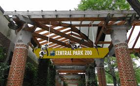
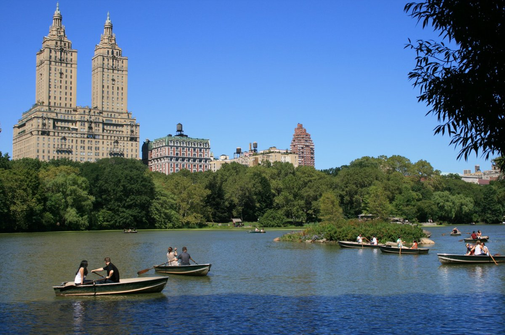
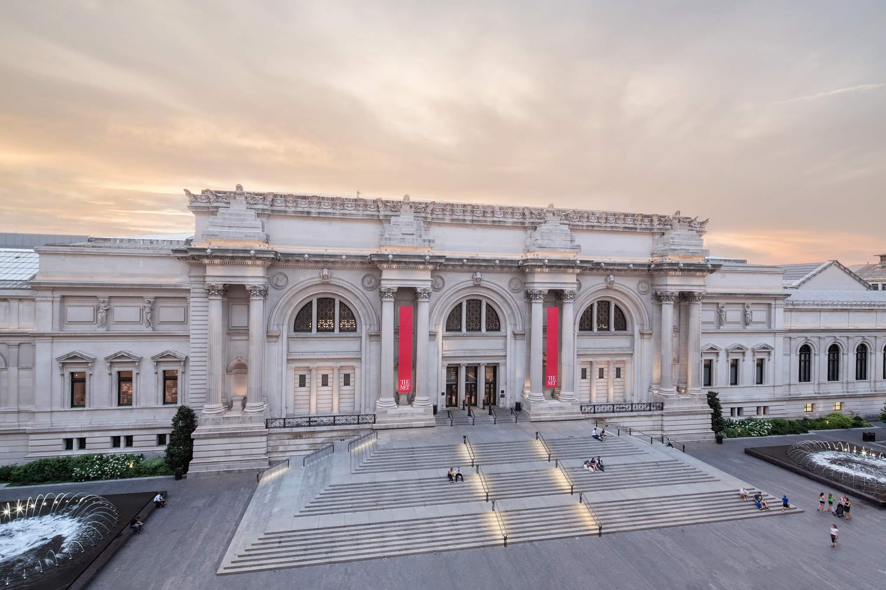

Discover the wide variety of animals that make Manhattan their home by paying a visit to the Central Park Zoo. From snow monkeys to sea lions, puffins to penguins, you can see all kinds of animals that live in Manhattan. On the lake in Central Park, you may either rent a boat or go on a gondola trip. You might also like to visit to the Metropolitan Museum of Art, which is the largest art museum in the western hemisphere and features works of art from all different time periods.